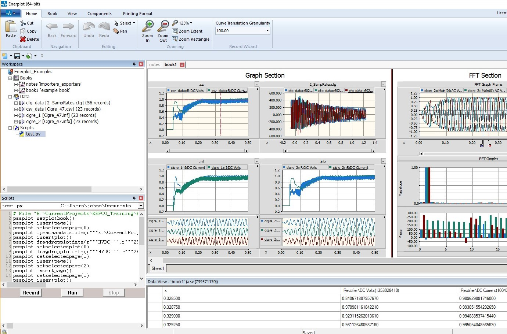
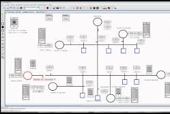
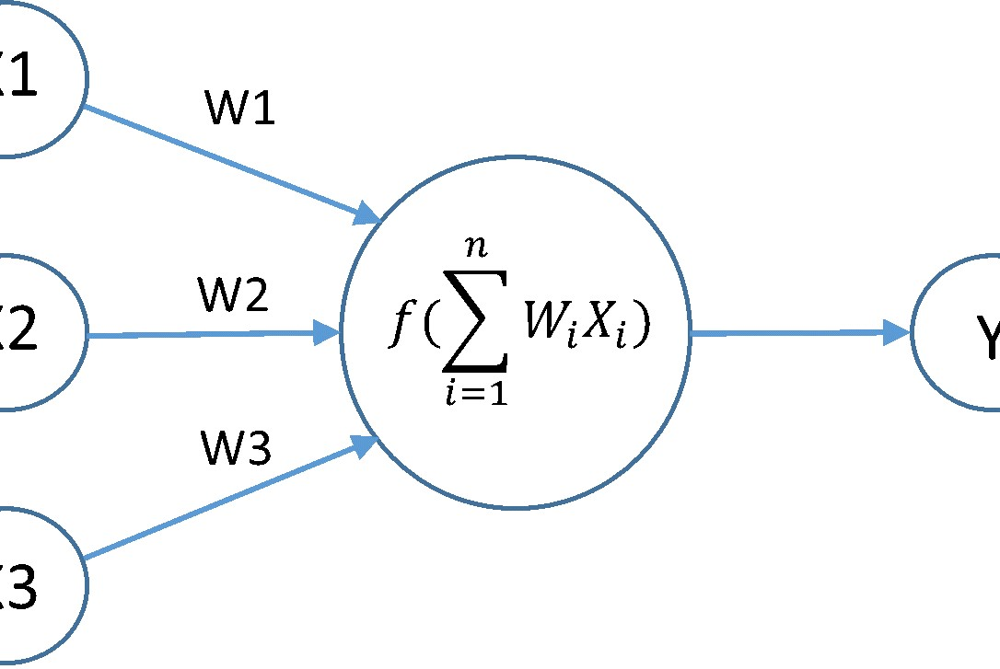
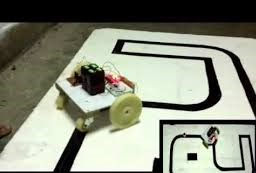
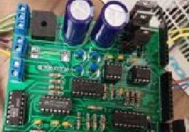
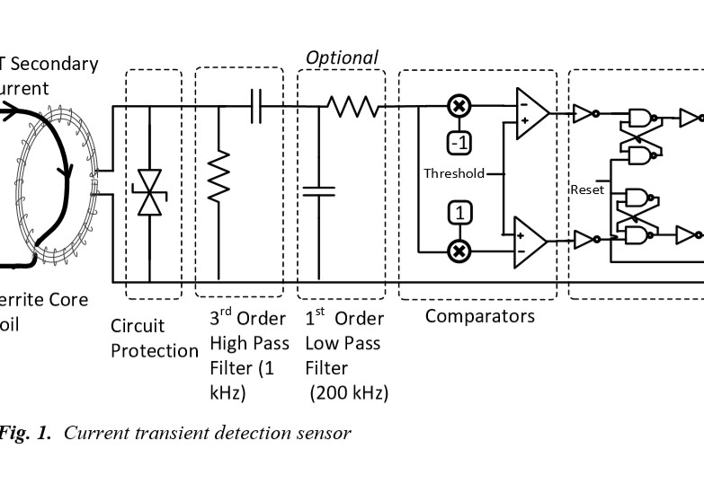

My Work
Check out some of my projects...
Testing new PSCAD relay model library
Implementing a protection scheme that relies on transient signals in the laboratory environment and demonstrating its performance using hardware-in-the-loop (HIL) simulations is an important step needed for real world application of transient based protection methods. In this project, transient-based protection scheme was implemented in a laboratory. Implementation comprised of power network simulated in Real Time Digital Simulation (RTDS) platform, commercial relays (SEL-421) and transient detection sensors. This work further verifies the use of transient based protection strategies for protection applications in active distribution networks.
Verification of Transient Based Protection Scheme Using HIL Simulations
Implementing a protection scheme that relies on transient signals in the laboratory environment and demonstrating its performance using hardware-in-the-loop (HIL) simulations is an important step needed for real world application of transient based protection methods. In this project, transient-based protection scheme was implemented in a laboratory. Implementation comprised of power network simulated in Real Time Digital Simulation (RTDS) platform, commercial relays (SEL-421) and transient detection sensors.This work further verifies the use of transient based protection strategies for protection applications in active distribution networks.
Design of Neural Network (NN) to identify the type of fault transients in electrical power networks
This project focused on designing and training NN to classify different types of transient faults in a power network. Training and testing data is obtained by simulating a power network in PSCAD power system simulation software. The trained NN was able to classify different types of transient faults with excellent accuracy. Selecting a few suitable inputs from large range of available input parameters is one of the main targets of the project.
Designing and constructing of intelligent pathfinding robots
Designed and constructed an intelligent robot (pathfinder) for the robotic competition conducted by the Department of Electronic Engineering, University of Moratuwa.Later, improved the design and participated in “RoboGames" competition conducted by Institute of Engineers, Sri Lanka.
Active distribution network protection design and implementation
The presence of a fault current source in the low voltage distribution level is a major challenge for the protection system designers. This project studied such systems in detail through simulations. Once the key network response trends identified, novel protection and relaying scheme was proposed and then validated through simulations. The contributions include developing an improved hybrid protection method for active distribution networks.
EMTDC modelling and verification of current sensor
Transient based protection schemes require suitable sensors to detect the high frequency signals. In this work, a new type of sensor is proposed to detect high frequency transients in currents and their initial polarities. Key component of the sensor is an open circuited ferrite core coil. A detailed model of the sensor, including the dynamic hysteresis characteristics of the ferrite coil, is modeled in electromagnetic transient simulation platform. Finally, the model is verified using experimental measurements.